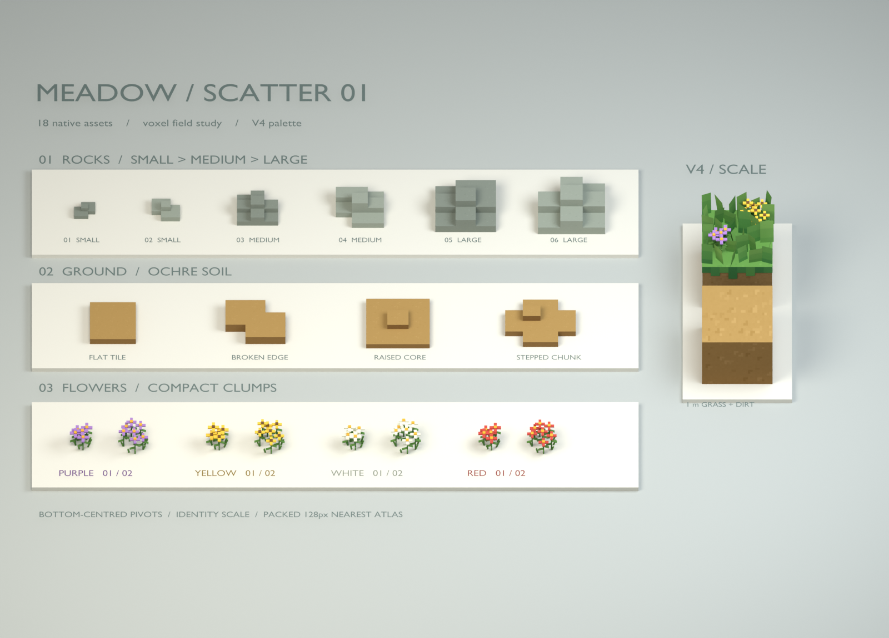
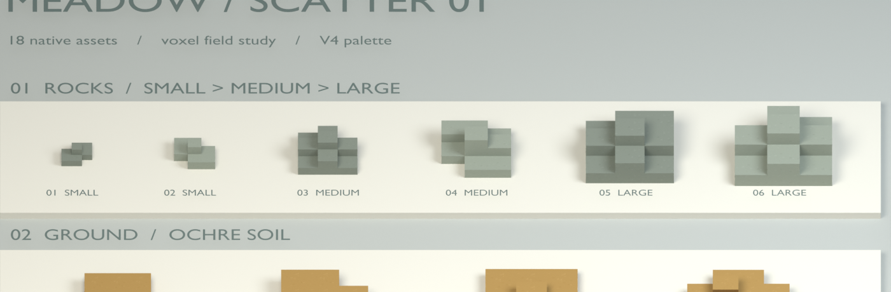
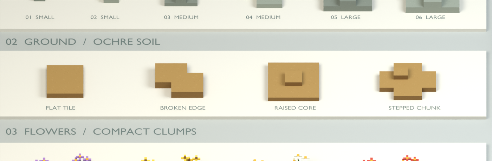
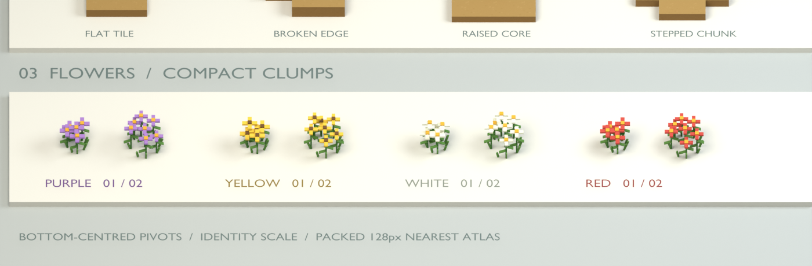
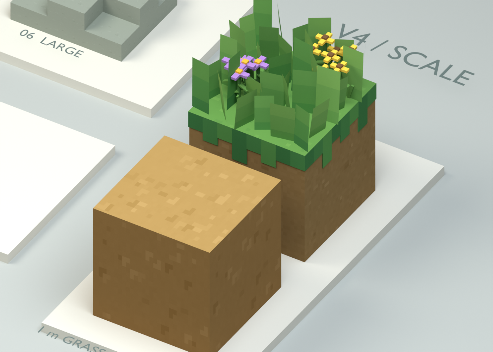

MEADOW / ENVIRONMENT STUDY 01
Bộ asset môi trường
Đá, đất và cụm hoa — cùng một phong cách voxel, chuẩn grass block V4.
AWAITING HUMAN REVIEW
18Asset mới
6Đá · 3 cỡ, mỗi cỡ 2 mẫu
4Đất · tile và chunk
8Hoa · 4 màu, mỗi màu 2 mẫu

01 / Đá
6 silhouette dạng khối bậc, từ đá nhỏ đến đá lớn vừa.

02 / Đất và nền
Màu đất vàng nâu, cạnh khối sạch, các mặt bậc và mép biến thể.

03 / Cụm hoa
Hai kiểu cụm gọn cho mỗi màu; cánh vuông, thân và lá ngắn.

04 / So cùng grass block V4
Grass và dirt block 1 m được sao chép vào scene để đối chiếu phong cách và tỷ lệ.

Từng asset / 18 mẫu
Bấm ảnh để xem cận hình khối của từng mẫu.
Review trong Blender
environment_scatter_set_v1.blend
Một showcase scene với collection theo nhóm và camera cận từng loại. Chọn asset để xoay, zoom và kiểm tra hình khối.
Chuẩn bị cho bước sau
Đơn vị mét, pivot tại đáy giữa, scale 1, mesh đặt tên rõ ràng. Vật liệu và atlas được đóng gói trong Blender. Đây là bản review; chưa xuất GLB hoặc tích hợp Godot.